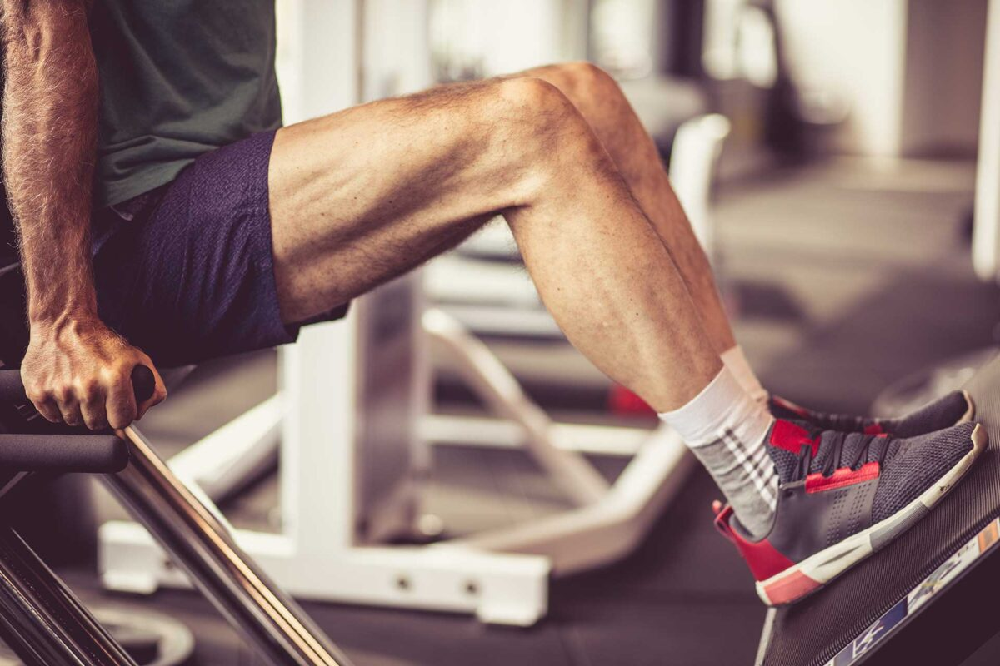

¡La rodilla es la articulación más grande del cuerpo! También es bastante importante como parte de la cadena de huesos, músculos y ligamentos que nos da movimiento y nos permite caminar. Es increíblemente fuerte, por lo que las lesiones y el dolor aquí pueden ser realmente debilitantes, lo que dificulta trabajar, caminar, correr, andar en bicicleta y disfrutar de cosas simples con amigos y familiares.
Tenemos experiencia en pruebas y diagnósticos ortopédicos, análisis de movimiento y fuerza, por lo que puede tener la confianza de que se le evalúa a fondo y el manejo se adapta específicamente a usted.
Con que podemos ayudarte?
- Consejos/recomendaciones sobre abordajes quirúrgicos
- Lesiones ligamentarias (LCA,LCM)
- Lesiones meniscales
- Fracturas o luxaciones
- Osteoartritis
- Tendinopatía cuadricipital o patelar
- Disfunciones femoropatelares
- Bursitis
